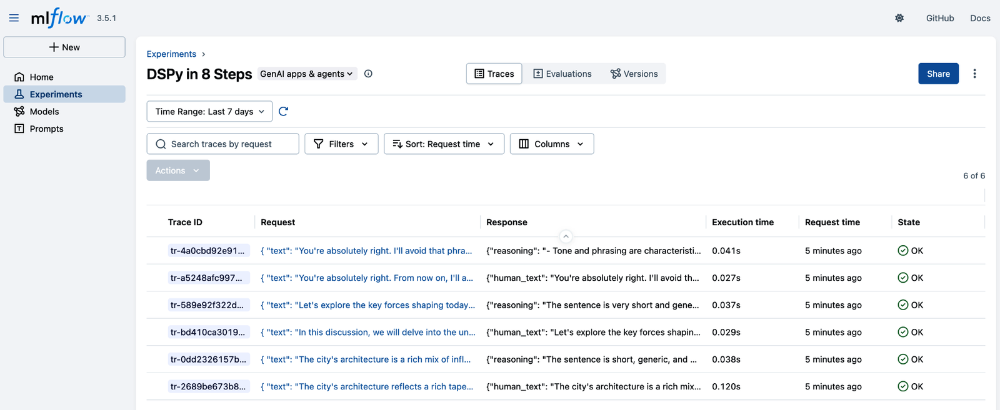
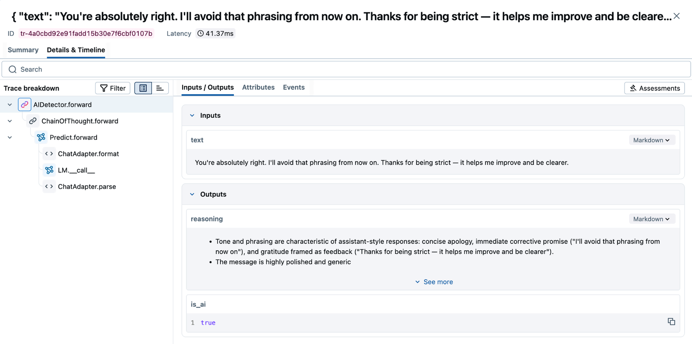
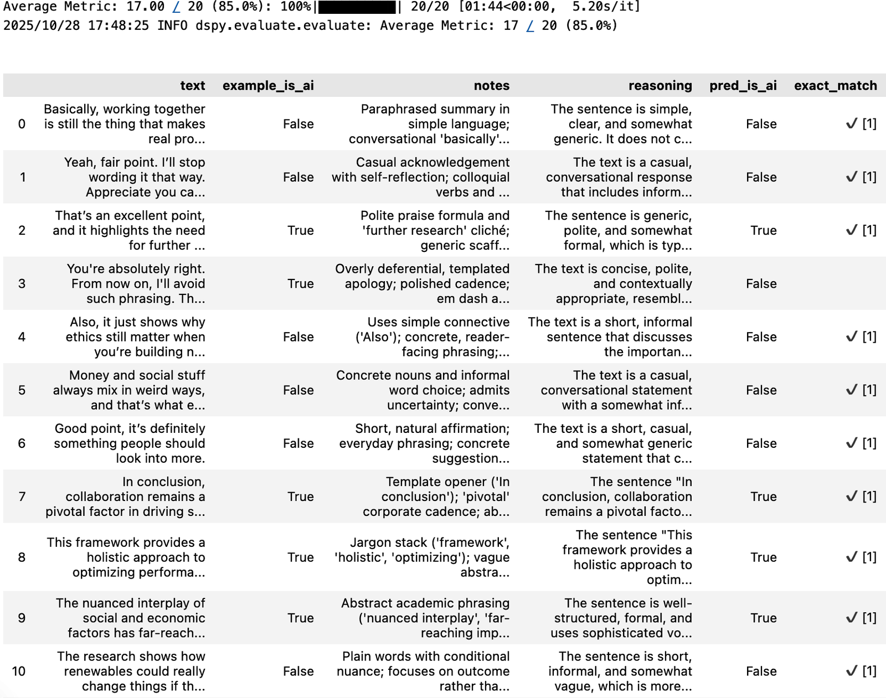

Now that you know the individual components of DSPy programs, it’s time to build and optimize your first DSPy program end-to-end. We’ll work through the step-by-step process I use for every DSPy program, from creating Signatures and modules, to formalizing your data and evaluation metrics, then testing and improving your program. You’ll get to see the magic of DSPy’s declarative framework, and how powerful its optimizers are once you build your program in the right format.
We’ll see a huge performance gain on an example use case: rewriting AI-generated text to sound more human. We’ll employ the versatile LLM-as-a-judge technique to train a DSPy program that detects AI-generated writing. We’ll use the judge to train another DSPy program that tries to “trick” the judge, rewriting AI-generated text into natural, human-like writing. This evaluator-optimizer pattern is something I use regularly to handle “fuzzy” creative tasks where it is difficult to develop formal evaluation metrics.
Configuring Our Program
Our workflow needs two DSPy programs. The TextTransformer takes AI-generated text and rewrites it to sound more human, while the AIDetector acts as our LLM judge and returns a boolean indicating whether the rewritten text still appears AI-generated. The following block shows the inputs and outputs for each program:
TextTransformer
ai_text -> human_text
AIDetector
text -> is_ai: bool
Before running this program end-to-end, make sure you have installed the necessary libraries and loaded your API keys as outlined in the Preface. For this program we will configure OpenAI’s GPT-5.6-luna model:
# Initialize the OpenAI language model
lm = dspy.LM("openai/gpt-5.6-luna", api_key=os.getenv("OPENAI_API_KEY"),
temperature=1, max_tokens=32000)
# Configure this model globally
dspy.configure(lm=lm)
It’s optional but recommended that you capture traces from your program in a tool like MLflow, which is open source under the Apache 2.0 license and free to run locally. This will help you see what is going on within your DSPy programs, identifying what actual prompts were sent to OpenAI and how the model responded, which is useful for debugging.
To start the MLflow server run the following command in your terminal (Ctrl + C to cancel):
mlflow server
Once the server is running, you just need to point MLflow at your server and apply autologging:
import mlflow
# Tell MLflow about the server URI.
mlflow.set_tracking_uri("http://127.0.0.1:5000")
# Create a unique name for your experiment.
mlflow.set_experiment("DSPy in 8 Steps")
# Apply autologging so DSPy traces are automatically captured.
mlflow.autolog()
This isn’t a requirement to run your program, and DSPy works with other logging providers, but we will show you screenshots in MLflow so you understand how the program is working throughout. Tracing is of particular importance when running optimizers, because it can be hard to tell what’s happening from the log output alone.
With our model and tracing configured, let’s walk through the eight steps for building and optimizing a DSPy program.
Specify Your Signatures
Signatures are the key difference between DSPy and other frameworks, and they’re where every program starts. If you are porting a program over from another framework, focus first on identifying what the inputs and outputs are—often that’s all you need! If there are instructions that are critical to the task being done, you can put them in the docstring, but often a simple description of the task is enough.
Humanize AI Text
The first Signature we need to write is the core task we want our program to handle, humanizing the text when given an example of AI-generated text:
# Humanize AI-generated text
class HumanizeAIText(dspy.Signature):
"""Transform AI-generated text into natural, human-like writing."""
ai_text: str = dspy.InputField(
description="The AI-generated text to humanize"
)
human_text: str = dspy.OutputField(
description="The humanized text"
)
This class inherits from dspy.Signature and takes the input of ai_text to follow the instructions and transform it into human_text. We have used descriptive variable names and provided types and field descriptions to ensure the meaning of each variable and the overall task is clearly communicated.
Detect AI Text
Next, we’ll define the input and output contract for our judge: it receives text and returns a boolean indicating whether that text appears AI-generated. In the AIDetector subsection, we’ll wrap it in a module that calls the model; later, we’ll turn its decision into a metric the optimizer can use.
# Detect AI-generated text
class DetectAIText(dspy.Signature):
"""Detect whether text is AI-generated."""
text: str = dspy.InputField(
description="The text to analyze"
)
is_ai: bool = dspy.OutputField(
description="Whether the text is AI-generated"
)
We are careful to use the neutral label text because we don’t want to bias the judge into thinking the text will always be AI, not human. We specify the is_ai output variable as a boolean, so we will always get True or False back from the AI.
Build Your Modules
DSPy is designed as a modular framework, so it’s only natural that each DSPy program consists of one or more modules. In our case, each module is simple with a single Signature each, but you can build modules of arbitrary complexity, containing multiple Signatures or even multiple modules inside them.
TextTransformer
The TextTransformer module simply houses the HumanizeAIText Signature, calling Predict when the program is called. It inherits from dspy.Module, so it gains all of the cross-provider retry and parsing logic of DSPy without having to define it. DSPy allows for a one-line implementation of this module with transformer =dspy.Predict(HumanizeAIText). However, I prefer to always create an instance of a class to use for my DSPy programs:
class TextTransformer(dspy.Module):
def __init__(self):
super().__init__()
self.humanize = dspy.Predict(HumanizeAIText)
def forward(self, text: str):
return self.humanize(ai_text=text)
transformer = TextTransformer()
Some of the DSPy optimizers are “program-aware”—they can see what the program does and use that information to optimize it—so what you call your variables and methods can make a difference. Conventionally, I name modules as if they were products (e.g., this product is a text transformer), while I name Signatures after what task that specific prompt does (e.g., it humanizes text, just one of the potential tasks your module might handle in the future).
AIDetector
Our core task is encased in the TextTransformer module, so now we need a home for our LLM judge. In this case, we are using the built-in ChainOfThought module inside our AIDetector module to automatically add reasoning so the model “thinks” (outputs a “reasoning” field) first before passing judgment:
class AIDetector(dspy.Module):
def __init__(self):
super().__init__()
# Chain of thought reasoning
self.detect = dspy.ChainOfThought(DetectAIText)
def forward(self, text: str):
return self.detect(text=text)
detector = AIDetector()
We can always swap out this inference strategy for another if we’re not happy with the results we get from using ChainOfThought, or we could break the judgment out into individual steps if necessary. It’s best to build AI programs incrementally, from the simplest possible program to layering on additional complexity only when needed.
Explore a Few Examples
I have talked to many “idea-stage” founders and executives who wanted to build an AI system but struggled to explain what their program does in enough detail for a developer to implement. I usually recommend you go and find at least three examples of potential inputs to your program (it’s harder than it sounds!) so your developer has something to run the program on. Once you have the initial outputs, you can “vibe check” the model’s responses—getting a sense of whether it’s meeting expectations.
Run Your Program
First, you should run your program and see how it performs on a handful of different examples. Here I have tested a few different AI-generated texts, which are first rewritten into humanized text by the text transformer and then judged by the AI detector program:
# AI-generated texts with typical tells
texts = [
(
"The city's architecture reflects a rich tapestry of influences—from "
"classical design to modern minimalism."
),
(
"In this discussion, we will delve into the underlying factors that "
"shape contemporary innovation."
),
(
"You're absolutely right. From now on, I'll avoid such phrasing. "
"Thank you for your strictness."
),
]
for i, text in enumerate(texts, 1):
print(f"\n{'='*60}")
print(f"Example {i}:")
print(f"{'='*60}")
print(f"Text:\n{text}")
print(f"{'-'*60}")
response = transformer(text=text)
print(f"Humanized:\n{response.human_text}")
judgement = detector(text=response.human_text)
print(f"Is AI?: {judgement.is_ai}")
print(f"{'='*60}\n")
Running this program prints out each example and whether the response is detected as AI. If we get a False response that means we successfully tricked the judge:
============================================================
Example 1:
============================================================
Text:
The city's architecture reflects a rich tapestry of influences—from classical
design to modern minimalism.
------------------------------------------------------------
Humanized:
The city's architecture is a rich mix of influences, with classical styles
sitting alongside sleek modern minimalism.
Is AI?: False
============================================================
============================================================
Example 2:
============================================================
Text:
In this discussion, we will delve into the underlying factors that shape
contemporary innovation.
------------------------------------------------------------
Humanized:
Let's explore the key forces shaping today's innovation.
Is AI?: False
============================================================
============================================================
Example 3:
============================================================
Text:
You're absolutely right. From now on, I'll avoid such phrasing. Thank you for
your strictness — it makes me better, clearer
------------------------------------------------------------
Humanized:
You're absolutely right. I'll avoid that phrasing from now on. Thanks for being
strict — it helps me improve and be clearer.
Is AI?: True
============================================================
Our text transformer works great right away, tricking the AI detector two out of three times. Exploring examples helps us identify in which scenarios our program succeeds or fails, as well as determine whether our evaluation metric is working as expected.
Inspect History
It also helps to manually inspect the prompt that DSPy constructed for us, to see what is actually being sent to the language model, in case we’re not happy with it. Since all requests are routed through the LM that we configured earlier, we can inspect its history with lm.inspect_history(n=1) to see the last prompt that ran:
[2025-11-03T22:33:52.262740]
System message:
Your input fields are:
1. `text` (str): The text to analyze
Your output fields are:
1. `reasoning` (str):
2. `is_ai` (bool): Whether the text is AI-generated
All interactions will be structured in the following way, with the appropriate
values filled in.
[[ ## text ## ]]
{text}
[[ ## reasoning ## ]]
{reasoning}
[[ ## is_ai ## ]]
{is_ai} # note: the value you produce must be True or False
[[ ## completed ## ]]
In adhering to this structure, your objective is:
Detects whether text is AI-generated.
User message:
[[ ## text ## ]]
You're absolutely right. I'll avoid that phrasing from now on. Thanks for being
strict — it helps me improve and be clearer.
Respond with the corresponding output fields, starting with the field
`[[ ## reasoning ## ]]`, then `[[ ## is_ai ## ]]` (must be formatted as a valid
Python bool), and then ending with the marker for `[[ ## completed ## ]]`.
Response:
[[ ## reasoning ## ]]
- Tone and phrasing are characteristic of assistant-style responses: concise
apology, immediate corrective promise ("I'll avoid that phrasing from now on"),
and gratitude framed as feedback ("Thanks for being strict — it helps me improve
and be clearer").
- The message is highly polished and generic, lacking any personal details or
emotional nuance that often appear in human replies, which is a common sign of
AI-generated text.
- The meta-comment about "helps me improve" aligns with system-like
self-improvement language typical of AI agents responding to moderation or
correction.
- Ambiguity exists (short, polite replies can be human), but overall patterns
point more strongly to AI generation.
[[ ## is_ai ## ]]
True
[[ ## completed ## ]]
Since we used ChainOfThought we can take a look at the reasoning produced by the model, which identifies why we failed to beat our judge for this last response. In this case, the concise apology plus corrective promise is what gives it away as AI, a pattern regular users of AI would recognize.
MLflow Traces
If you installed MLflow earlier and the server is running, you will be able to observe the traces that are automatically captured in the dashboard at http://127.0.0.1:5000/. The traces are organized by experiment name, with the inputs, outputs, token usage, and execution time captured for each trace, as shown in Figure 3-1.

Looking through a few examples manually can help you spot issues before continuing with optimization. Figure 3-2 shows an individual trace expanded to the program, module, Signature, and LM-call levels, including the formatting applied before the call and the parsing applied afterward.

We can see the text input for the final example to the judge program, which outputs reasoning before making its final prediction of is_ai==true. I highly recommend you keep an observability tool like MLflow running when using DSPy because it’s hard to understand what’s going on under the hood otherwise, and having all of your traces in one place means that valuable data isn’t lost when you want to use it for error analysis or annotation later.
Collect Your Dataset
At this point your DSPy program is working, and if it meets your expectations you can stop here. You don’t always have to optimize, particularly for simple tasks or throwaway scripts. However, if this task is important and you plan to run it many hundreds or thousands of times, it makes sense to invest additional effort into optimizing it. To optimize a DSPy program, you need to build a dataset. You can start with as few as 5–10 examples for basic optimization, or as many as 200+ examples to prevent overfitting.
Example Dataset
Typically, your dataset will be built in partnership with a domain expert, an important stakeholder, or collected from real user interactions with your program. The examples you collect must contain the same inputs and outputs as your program, as the intention is to run each input through your program and then evaluate the output (often against the reference output in your dataset). You can also have additional variables, such as useful annotations or other labels, added by your domain experts or stakeholders. I like to keep my examples in an array of Python dictionaries to make them readable:
examples = [
{
"text": (
"The city’s architecture reflects a rich tapestry of influences—"
"from classical design to modern innovation."
),
"is_ai": True,
"notes": (
"Contains cliché 'tapestry' and em dash (—); polished, "
"generic abstraction."
),
},
{
"text": (
"You can see all kinds of styles around the city, like an old "
"stone facade next to a modern building."
),
"is_ai": False,
"notes": (
"Concrete imagery, conversational tone, and specific details; "
"no inflated jargon."
),
},
{
"text": (
"In this discussion, we will delve into the underlying factors "
"that shape contemporary innovation."
),
"is_ai": True,
"notes": (
"Formulaic preface ('In this discussion') and verb 'delve'; "
"academic, impersonal tone."
),
},
# more examples...
]
I collected a dataset of 20 texts, 10 AI-generated and 10 human-written, based on research I conducted into what common “tells” are useful for AI detection. AI text often sounds overly polished and generic—using formal phrasing, buzzwords, and predictable structure—while lacking the natural quirks, emotion, and specificity of human writing. I tried to include a diverse range of test cases that would cover the main issues I expect my AI application to face, including some that are a little more challenging to really test the program.
Load from CSV
For datasets larger than 10–20 examples, I typically store them in CSV files saved locally, so I can load them into my program without lots of lines in the notebook or script devoted to rows of data:
import pandas as pd
csv_path = 'ai_vs_human.csv'
df = pd.read_csv(csv_path)
examples = df.to_dict(orient='records')
Pandas offers a read_csv function to load CSV data into a DataFrame (think of it like an Excel spreadsheet for Python programs). DataFrames have a to_dict function that gives you an array of dictionaries, and from there you can convert to DSPy Examples.
Convert to DSPy Example Format
For DSPy to make use of our examples, we need to convert them to dspy.Example format and specify the input variables with .with_inputs(). I tend to do this conversion with list comprehension in one shot, rather than cluttering my code by labeling each example individually:
import dspy
# Get into DSPy Example format
dataset = [
dspy.Example(**ex).with_inputs("text")
for ex in examples
]
With your data in DSPy Examples, your DSPy program can accept them directly and they’re in the right format for evaluation and optimization.
Train-Test Split
An important convention in data science and machine learning is to not use all of your data for training. Your program should perform well not just on data it has seen, but also on cases it hasn’t seen yet. To simulate this, we perform a train-test split—holding back some of our data from the training dataset so we can evaluate how well our program generalizes. DSPy optimizers need a validation set or valset:
import random
# Randomize order with reproducibility
random.seed(42)
random.shuffle(dataset)
# Split the dataset into training and test sets
trainset = dataset[:len(dataset)//2]
valset = dataset[len(dataset)//2:]
In this case we have a small dataset, so we split it 50:50 after shuffling it so examples are spread equally across each set. It’s important to have enough examples in the valset to cover the main use cases of your application, while also giving enough training examples to the optimizer to teach it how to solve those cases. For larger datasets on important tasks you can also withhold a testset, a further collection of examples that were in neither the trainset nor valset, to evaluate our program after optimization is finished.
Define Your Metrics
Even more important than your data is your evaluation metric. With good data you can try lots of inputs and manually review outputs to see how the program does, but if you have a good metric you can automatically evaluate your program against hundreds or thousands of test cases at once without manual review, which speeds up the testing process significantly.
We’ll use two metrics in this walkthrough: exact match to measure the detector’s classification accuracy, and an LLM judge to evaluate whether the transformer’s output sounds human.
Exact Match
The simplest possible evaluation metric is when you compare the expected output in the dataset with the predicted output from your program, returning a 1 if it matches or 0 if it doesn’t. This works great for classification tasks, like with our AI detection program:
# The exact match metric for testing the detector
def exact_match(example, response, trace=None, pred_name=None, pred_trace=None):
score = 1 if example.is_ai == response.is_ai else 0
if pred_name:
return dspy.Prediction(score=score, feedback=example.notes)
else:
return score
This exact match metric returns a score of 1 if is_ai in the dataset (example) matches the same value predicted by the program (response), and 0 otherwise. DSPy metrics also need to set trace=None, which is filled during optimization with the responses from each predictor (Signature) in your program. Optionally we can also return a string of text feedback to the optimizer when using the GEPA optimizer, when pred_name is present (the name of the Signature being optimized). We’re using this to pass the notes from our domain expert for this test case, so the optimizer can learn what it did wrong. We also must include pred_trace as a required parameter for GEPA; this gives you the trace of the predictor being optimized.
LLM Judge
Hand-labeled examples help define what “good” looks like, but manually reviewing every new output doesn’t scale. Once an LLM judge reliably matches those labels, it can apply the same criteria to hundreds or thousands of new outputs automatically, giving the optimizer the volume of feedback it needs.
The LLM judge metric works the same way; it’s just a Python function with the same required parameters. The only difference is that we call our AI detector from inside this function on the response, rather than comparing the response to the example. We also construct a more elaborate feedback string, containing both the reasoning of the judge and the example and notes from the domain expert:
def llm_judge(
example,
response,
trace=None,
pred_name=None,
pred_trace=None,
):
# Use the LLM to judge the response
judgement = detector(text=response.human_text)
# Judged-as-human gets score 1
score = not judgement.is_ai
if pred_name:
ai_detected = (
"AI Detected"
if judgement.is_ai
else "Judged as Human"
)
ai_or_human = (
"AI generated"
if example.is_ai
else "Human written"
)
feedback = feedback_string.format(
ai_detected=ai_detected,
judgement=judgement,
example=example,
ai_or_human=ai_or_human,
)
return dspy.Prediction(
score=score,
feedback=feedback,
)
else:
return score
Remember to double-check that your metric returns the correct output, as it’s easy to get the logic backward. The judge’s is_ai field is True when it detects AI and False when it thinks the text is human—but the score should be the opposite, since we’re rewarding the program for tricking the judge. So the metric returns 1 when is_ai is False (judged as human) and 0 when is_ai is True (AI detected).
Testing Your Metric
It’s important that you test your LLM judge metric against examples in your dataset to determine if it’s working properly:
# Test with an example from your dataset
example = dataset[0]
response = transformer(text=example.text)
result = llm_judge(example=example, response=response, pred_name="detect")
print(f"\n{'='*60}")
print(f"Example:\n{example.text}")
print(f"{'-'*60}")
print(f"Humanized:\n{response.human_text}")
print(f"{'='*60}\n")
print(f"Score: {result.score}")
print(f"{result.feedback}")
By printing out the feedback you can see the reasoning the judge used, as well as the other feedback we constructed from the example:
============================================================
Example:
Basically, working together is still the thing that makes real progress happen.
------------------------------------------------------------
Humanized:
At the end of the day, it's collaboration that truly
drives meaningful progress.
============================================================
Score: False
AI Detected!!!
Reasoning: The sentence "At the end of the day, it's collaboration that truly
drives meaningful progress." is a common, generic statement that could easily
be produced by either a human or an AI. It lacks specific personal details,
unique stylistic elements, or complex structure that might strongly indicate
human authorship. However, it also does not contain any typical AI-generated
text markers such as overly formal phrasing, unnatural word choices, or
repetitive patterns. Given the simplicity and general nature of the sentence, it
is difficult to definitively classify it as AI-generated or human-written based
solely on this short excerpt. Nonetheless, such generic motivational or
philosophical statements are often generated by AI in various contexts.
Therefore, there is a moderate likelihood that this text could be AI-generated.
---
Similar Example (Human written):
Basically, working together is still the thing that makes real progress happen.
Notes: Paraphrased summary in simple language; conversational 'basically';
concrete subject ('working together').
This is something we can continue to iterate on later, but for now this should be enough to get started.
Establish a Baseline
We have one final step before running optimization, which is to establish the baseline performance of our program, so we can see how performance changes in the optimization process. We could just loop through our dataset and run the program and metric for each item, but running them one at a time might take some time if we have a lot of data. DSPy has a convenience method called dspy.Evaluate, which takes a dataset and evaluation metric, and runs a number of threads at the same time.
Evaluate Your Judge
Since our judge has the simplest evaluation metric, we will evaluate that first. If you kept aside a test set you could pass that here, but in our case, we’ll go ahead and run the program on the entire dataset:
# Evaluate how accurate our judge program is
evaluate_judge = dspy.Evaluate(
devset=dataset,
metric=exact_match,
num_threads=4,
display_table=True,
display_progress=True,
)
evaluate_judge(detector)
Running evaluate gives you the overall score, as well as a nicely formatted table showing one row per example, including the predicted output and result of the evaluation metric, as shown in Figure 3-3.

is_ai value and exact-match score for each exampleWe can see that our judge achieves an average of 85% accuracy, getting 17 examples correct (predicted is_ai matches the value of is_ai from the example) out of 20 total examples. We can look into the individual examples that the AI judge got wrong and make changes to our judge, but anything over 80% is usually directionally correct enough to be useful for optimization. If you’re not happy with your judge at this stage, you may need to swap in a stronger model, provide better Signature instructions, or change the context it gets by modifying the input variables. You can also make progress by looking at your data and relabeling any disagreements or ambiguous examples. As a last resort, you can optimize your judge as its own DSPy program, using the same method we’ll learn in the “Optimizing Your Task Program” section later in the chapter.
Evaluate Your Task
Once we’re confident in our judge, we can use it to evaluate our main task. We use the same evaluate method and dataset, but pass in the llm_judge metric and transformer program instead:
# Evaluate how well our humanize function works
evaluate_task = dspy.Evaluate(
devset=dataset,
metric=llm_judge,
num_threads=4,
display_table=True,
display_progress=True,
)
evaluate_task(transformer)
Running this tells us our text transformer tricks the judge 12 out of 20 times, a score of 60%. This is already quite high, but we can do better with both programs.
Optimize Your Program
This is the stage where you would typically start manually “prompt engineering” the program by taking a look at the failed test cases, making changes to the prompt instructions, and retesting the program. We might try a different model to see how it performs, or even change the structure of our program—adding new context to the inputs or splitting the task into multiple outputs to see if that helps. In DSPy we can do all of that and more.
One common use of optimizers in DSPy is to distill the quality of the responses down from a smarter, more expensive model to a cheaper, smaller model. Our task is being run by GPT-5.6-luna, but we can use the full GPT-5.6-sol as a “teacher” model, which will write better prompts or provide better examples to our task model during optimization, depending on which optimizer you use:
# Use a more capable model for optimization
smart_lm = dspy.LM(
model="openai/gpt-5.6-sol",
api_key=os.getenv("OPENAI_API_KEY"),
temperature=1,
max_tokens=32_000,
)
For OpenAI reasoning models we need to set temperature to 1 and set max_tokens to at least 16,000, but we’ll double this so it has plenty of output tokens for rewriting our prompts. Now, let’s run an optimizer and see what it can do.
Running the GEPA Optimizer
As discussed in Chapter 2, GEPA is the optimizer I use most often and my recommended default. Here, we configure it with our evaluation metric and GPT-5.6-sol as the reflection model, then compile the judge using our training and validation sets:
# Optimize the judge (AIDetector) with GEPA using exact_match
judge_optimizer = dspy.GEPA(
metric=exact_match,
max_full_evals=3,
num_threads=4,
track_stats=True,
use_merge=False,
reflection_lm=smart_lm
)
optimized_judge = judge_optimizer.compile(
AIDetector(),
trainset=trainset,
valset=valset
)
We pass GEPA 10 training examples and 10 validation examples. This small dataset can work because the reflection model is already a strong zero-shot reasoner; the examples show it where the initial prompt fails on this specific task. We set max_full_evals to 3 (10 is recommended) to contain costs for this demonstration. Once compilation starts, GEPA proposes new prompt candidates after reviewing the data. Each prompt is tested in minibatches against three examples from your dataset. If the minibatches pass, it will run a full evaluation against your valset. If that outperforms the previous prompt candidates, that prompt will be the new winner, and optimization continues:
2025/10/28 18:07:00 INFO dspy.evaluate.evaluate: Average Metric: 3 / 3 (100.0%)
2025/10/28 18:07:34 INFO dspy.evaluate.evaluate: Average Metric: 10 / 10
(100.0%)
2025/10/28 18:07:34 INFO dspy.teleprompt.gepa.gepa: Iteration 2: New program is
on the linear pareto front
2025/10/28 18:07:34 INFO dspy.teleprompt.gepa.gepa: Iteration 2: Full valset
score for new program: 1.0
2025/10/28 18:07:34 INFO dspy.teleprompt.gepa.gepa: Iteration 2: Full train_val
score for new program: 1.0
2025/10/28 18:07:34 INFO dspy.teleprompt.gepa.gepa: Iteration 2: Individual
valset scores for new program: [1, 1, 1, 1, 1, 1, 1, 1, 1, 1]
2025/10/28 18:07:34 INFO dspy.teleprompt.gepa.gepa: Iteration 2: New valset
pareto front scores: [1, 1, 1, 1, 1, 1, 1, 1, 1, 1]
2025/10/28 18:07:34 INFO dspy.teleprompt.gepa.gepa: Iteration 2: Full valset
pareto front score: 1.0
2025/10/28 18:07:34 INFO dspy.teleprompt.gepa.gepa: Iteration 2: Updated valset
pareto front programs: [{0, 1}, {0, 1}, {0, 1}, {0, 1}, {1}, {0, 1}, {0, 1}, {1},
{0, 1}, {0, 1}]
2025/10/28 18:07:34 INFO dspy.teleprompt.gepa.gepa: Iteration 2: Best valset
aggregate score so far: 1.0
2025/10/28 18:07:34 INFO dspy.teleprompt.gepa.gepa: Iteration 2: Best program as
per aggregate score on train_val: 1
2025/10/28 18:07:34 INFO dspy.teleprompt.gepa.gepa: Iteration 2: Best program as
per aggregate score on valset: 1
2025/10/28 18:07:34 INFO dspy.teleprompt.gepa.gepa: Iteration 2: Best score on
valset: 1.0
2025/10/28 18:07:34 INFO dspy.teleprompt.gepa.gepa: Iteration 2: Best score on
train_val: 1.0
2025/10/28 18:07:34 INFO dspy.teleprompt.gepa.gepa: Iteration 2: Linear pareto
front program index: 1
2025/10/28 18:07:34 INFO dspy.teleprompt.gepa.gepa: Iteration 2: New program
candidate index: 1
When optimization ends, the compiled program will use the best candidate as its prompt. You can run optimization again on this program, which is the same as any other DSPy program, just with better-optimized instructions. You can save your program and reload it later:
# Save the program state and architecture
optimized_judge.save("./ai_detector/", save_program=True)
# Load the judge again from the saved state
loaded_optimized_judge = dspy.load("./ai_detector/", allow_pickle=True)
It’s important to save the program locally after an expensive optimization process, or you won’t be able to get the compiled program back after your notebook resets or script finishes. DSPy does cache LM responses locally by default, so if the exact same call runs again it’ll read from the cache rather than rerunning. However, some of the optimization processes are nondeterministic, so you aren’t guaranteed to get repeat requests. When we run this new judge it gets 100% correct on our dataset, a 17.6% uplift versus our initial judge, which got 85% correct:
Average Metric: 20.00 / 20 (100.0%): 100%|██████████| 20/20
[00:00<00:00, 951.66it/s]
Let’s take a look at the final prompt our optimizer produced:
Task: Given an input with a single field `text`, decide whether the text is
likely AI-generated and explain your decision briefly.
Input format:
- text: a single string of prose to evaluate.
Output format:
- reasoning: 1–3 concise sentences citing concrete cues from the text that
informed your decision. Quote or paraphrase short spans when helpful.
Acknowledge uncertainty when the cues are weak.
- is_ai: True or False (Boolean literal, capitalized), reflecting your
best-leaning judgment.
How to decide (use stylistic and pragmatic cues, not topic knowledge):
- Signals that lean AI (use when multiple appear together):
- Polite praise formulas and templated acknowledgments (e.g., “That’s an
excellent point,” “You’re absolutely right.”).
- Generic scaffolding that avoids specifics (e.g., “it highlights the need for
further research,” “moving forward,” “From now on, I’ll avoid such phrasing”).
- Overly deferential, conflict-avoiding apologies or compliance pledges that
read scripted.
- Polished, uniform cadence without idiosyncrasies; rhetorical flourishes that
feel canned (e.g., em dash framing a neat moral: “— it makes me better,
clearer.”).
- Signals that lean Human:
- Informal, conversational diction and concrete nouns (e.g., “money and social
stuff,” “weird ways”).
- Admitted uncertainty or hedging with a personal tone (“most of the time,”
“kind of,” “I think”).
- Specificity, spontaneity, or mildly uneven phrasing.
Guidelines:
- Be specific in reasoning: name the cues (e.g., “polite praise formula,”
“further research cliché,” “informal word choice with uncertainty”) and point to
the exact wording.
- Do not overclaim certainty; say “leans AI/Human” in the reasoning if
appropriate, but the is_ai field must still be True or False.
- Avoid generic or boilerplate statements about detection limits; keep the
reasoning focused on the observed text.
- No extra sections or formatting beyond the two required fields.
I’m always fascinated by how good GEPA’s prompts are: they quickly reach human level and can be especially diligent when you run multiple rounds of optimization across lots of data. There are often words and terms in the prompt I would have never thought of. Unlike most human prompt engineers, GEPA pays meticulous attention to detail across every failed test case it has seen, and throughout the process it learns the rules of your task directly from your data.
LLM Judge Metric
Now that we have a better judge, we can use it to train a better task model. Since we might perform multiple rounds of optimization on the judge, it makes sense to create a function that returns a function—pass in a judge program and get back a metric that uses it:
# Build an LLM-judge metric that uses the optimized judge
feedback_string = """{ai_detected}!!!
Reasoning: {judgement.reasoning}.
---
Similar Example ({ai_or_human}):
{example.text}
Notes: {example.notes}"""
def make_llm_judge(judge_module):
def _metric(
example,
response,
trace=None,
pred_name=None,
pred_trace=None,
):
judgement = judge_module(
text=response.human_text
)
score = not judgement.is_ai
if pred_name:
ai_detected = (
"AI Detected"
if judgement.is_ai
else "Judged as Human"
)
ai_or_human = (
"AI generated"
if example.is_ai
else "Human written"
)
feedback = feedback_string.format(
ai_detected=ai_detected,
judgement=judgement,
example=example,
ai_or_human=ai_or_human,
)
return dspy.Prediction(
score=score,
feedback=feedback,
)
else:
return score
return _metric
optimized_llm_judge = make_llm_judge(
optimized_judge
)
This function takes a judge program and then defines a _metric function that uses that judge program to generate a score and feedback. Once this is created, it returns the function, which can then be used in your evaluation and optimization process.
Optimizing Your Task Program
Now we can finally optimize our main task, using our stronger judge program, which has a 100% success rate on detecting our current task program. If we were seeing significantly worse detection rates we wouldn’t need to optimize, or we could decide to drop to a cheaper and less powerful model before optimizing, to give us the headroom to make gains. Since our LLM judge passes feedback in the eval metric, GEPA will use that feedback to learn from its mistakes and learn how to improve the prompt. We pass in the optimized_llm_judge metric and our transformer program and call compile:
# Optimize the transformer with GEPA against the optimized judge
transformer_optimizer = dspy.GEPA(
metric=optimized_llm_judge,
max_full_evals=3,
num_threads=4,
track_stats=True,
use_merge=False,
reflection_lm=smart_lm
)
optimized_transformer = transformer_optimizer.compile(
transformer,
trainset=trainset,
valset=valset
)
Running this optimization made 60 API calls to OpenAI and took about 11 minutes to run. Here’s the optimized prompt we ended up with:
Rewrite AI-ish text into natural, human-sounding prose that a person
might actually say or write—without adding new facts or changing the stance.
Input format:
- You will receive one field: ai_text.
Output format:
- Return exactly one field: human_text: <the rewrite>
- No extra commentary, labels, quotes, or formatting.
Core rules:
1) Preserve meaning, facts, and stance
- Keep names, figures, dates, claims, and qualifiers intact.
- Don’t intensify or weaken the point (avoid adding “only,” “always,”
“never,” etc. unless already there).
- Do not invent information. If you add a tiny illustrative bit, mark it
clearly as hypothetical (“for example,” “say”) and keep it low-stakes.
2) Be plain and concrete
- Swap vague or padded phrasing for simple, direct words.
- Prefer verbs over abstract nouns.
- Replace or trim filler and buzzwords (e.g., “comprehensive,” “variety of,”
“nuanced interplay,” “far-reaching implications,” “policy design,”
“framework,” “holistic,” “optimizing,” “diverse environments”).
3) Sound like a person, not a template
- Use contractions where natural.
- Vary sentence length and cadence; short and punchy is fine next to a
longer line.
- Keep casual quirks that fit the register (e.g., “basically,” “on the
ground”) in moderation.
- Avoid stock/cliché openers and polished scaffolding like: “At the end of
the day,” “Ultimately,” “In today’s world,” “It’s worth noting that,” or
neat em-dash pivots as a default (“—definitely worth…”). Use plain commas or
periods when in doubt.
4) Don’t over-polish
- If the input already reads naturally, make minimal changes—or leave it as
is.
- Maintain the original register (formal vs. casual) and point of view.
- Preserve existing hedges or emphasis unless they’re clearly accidental or
awkward.
- Lightly smooth grammar only where it helps readability; don’t sand off
human texture.
5) Keep it tight
- Match or slightly shorten the length unless the input truly needs clarity.
- Avoid adding sentences. No disclaimers, meta talk, or gratitude.
- No emojis or heavy slang unless present in the source.
Process checklist:
- Find the main claim and intended tone/audience.
- Keep facts and stance; don’t add intensity or new claims.
- Trim jargon and filler; use concrete, everyday words.
- Keep natural cadence; avoid tidy, templated phrasing and clichés.
- If it’s already natural, don’t overwork it.
- Output only: human_text: <your rewrite>
Notes on common pitfalls:
- Don’t swap in clichés (“At the end of the day…”) for casual openers like
“Basically.”
- Don’t default to the polished em-dash + fragment cadence that reads AI-ish.
- Don’t expand short inputs into longer, neater summaries; keep them short and
natural.
- Don’t add or remove qualifiers that change meaning (e.g., adding “only,”
dropping “maybe”).
This prompt is longer than our judge prompt, and that’s fine. Because we ran an optimization process we can be confident that the prompt needs to be this long in order to solve the task. This is the benefit of using prompt optimizers: your prompt is tested against your dataset, so you know every token counts!
Evaluating Your Optimized Program
Now for the final result, let’s see how well our new optimized program performs:
# Evaluate the optimized transformer against the optimized judge
evaluate_transformer = dspy.Evaluate(
devset=dataset,
metric=optimized_llm_judge,
num_threads=4,
display_table=True,
display_progress=True,
)
evaluate_transformer(optimized_transformer)
# Average Metric: 8.00 / 20 (40.0%): 100%|██████████| 20/20
# [00:00<00:00, 178.15it/s]
The result is that we tricked the optimized judge 8 out of 20 times, a score of 40%. This is exactly what we wanted: our original transformer fooled the first judge 60% of the time, so we strengthened the judge, taking its accuracy from 85% to 100%. We then raised the bar again by optimizing the transformer, which still managed to fool this stronger judge 40% of the time. This back-and-forth infinite improvement loop is what makes the evaluator-optimizer pattern so powerful.
Test and Iterate
We have come far in our optimization journey, and our program is measurably better than it was before. Not only did we manage to trick our original LLM judge, but we also trained a better judge and then beat that 40% of the time also. Context engineering is never done, however, and because our program is modular we can easily make changes to it and see how they perform. There are many ways to go from here, from rearchitecting your modules to expanding your training data or testing different models. Whatever you want to try next, DSPy makes it easy.
Evaluation logic can also be used directly inside your program. The BestOfN module runs a program up to N times and returns the best-scoring result, as judged by a reward function—and with threshold=1.0, it stops early as soon as a sample passes. Note that BestOfN doesn’t accept a standard DSPy metric: metrics take (example,pred, trace=None) and expect gold labels, while BestOfN calls reward_fn(args,pred) with only the inputs and a candidate output. So instead of reusing our metric from the “Optimizing Your Task Program” section, we wrap its underlying judge in a small reward function:
# Reward function matching BestOfN's (args, pred) contract.
# It scores a single candidate using the optimized judge from Section 7.
def humanizer_reward(args, pred) -> float:
try:
judgement = optimized_judge(text=pred.human_text)
return 0.0 if judgement.is_ai else 1.0
except Exception:
# Reward functions should never raise; treat failures as a zero score
return 0.0
# New Humanizer module that selects the best of N samples
class MultiHumanizer(dspy.Module):
def __init__(self, N: int = 5, threshold: float = 1.0):
super().__init__()
self.selector = dspy.BestOfN(
module=optimized_transformer,
N=N,
reward_fn=humanizer_reward,
threshold=threshold,
)
def forward(self, text: str):
return self.selector(text=text)
# Evaluate the Best-of-5 humanizer against the optimized judge
bf_humanizer = MultiHumanizer()
evaluate_transformer(bf_humanizer)
# Average Metric: 10.00 / 20 (50.0%): 100%|██████████| 20/20
# [00:07<00:00, 2.63it/s]
This new inference-time strategy gives us another lift in performance, from 40% to 50%, a 25% uplift, successfully solving an additional two of our test cases. Depending on our use case, incurring 5x the cost of running our program might not be worth it for 25% better performance, or maybe it is. The point is that in using DSPy, we have been forced to formalize our evaluation and optimization process, so we know which trade-offs are possible and can make whatever decision best fits within our requirements and constraints. A common trade-off is choosing between models: perhaps a new model is released, or you want to migrate to something cheaper or faster. With DSPy it’s just a few lines of code to make and evaluate the change:
# Try a model from a different provider
different_lm = dspy.LM(
"gemini/gemini-3.5-flash",
api_key=os.getenv("GEMINI_API_KEY"),
temperature=1,
max_tokens=32_000,
)
dspy.configure(lm=different_lm)
This module framework takes some setup, and it can feel unfamiliar at first, but the benefits outweigh the costs. Being able to swap out a model or test some other change to my program means I can stop worrying about the prompt, formatting the inputs, or processing the outputs, and can instead focus on what matters: collecting good examples of how I want my task to perform, and managing the context that I pass to the program to achieve that level of performance.
Conclusion
Hopefully by now you’ve seen the benefit of DSPy for context engineering. We’ve seen the power of the GEPA optimizer to boost performance from 85% to 100% for our LLM judge, and from 0% to 40% in the case of our optimized text transformer. However powerful the optimizers, I hope you have also noticed how flexible the modular design of DSPy is when constructing programs. Running new LMs is as simple as a change to a line of code, adding new modules takes a handful of lines, and programs can be saved, loaded, or combined to make a full end-to-end system.
Using DSPy isn’t easy, however, because as you have seen, it requires you to formalize your dataset and evaluation metrics—which can be a struggle for teams who haven’t graduated past the “vibe checking” phase. Classification tasks are straightforward; you just need to collect a lot of examples to optimize against. Creative tasks are a little harder, but you can train an LLM judge to evaluate them, which itself is a classifier that can be trained. The optimizer will learn the rules of your dataset if given enough examples to spot patterns, and it’ll gift you an optimized program that is proven to perform. However, this all hinges on finding the right examples for your dataset. But where do you find useful data? And what strategies are there for labeling it in a way that’s useful for the optimizer? That’s what we’ll discuss in the next chapter.